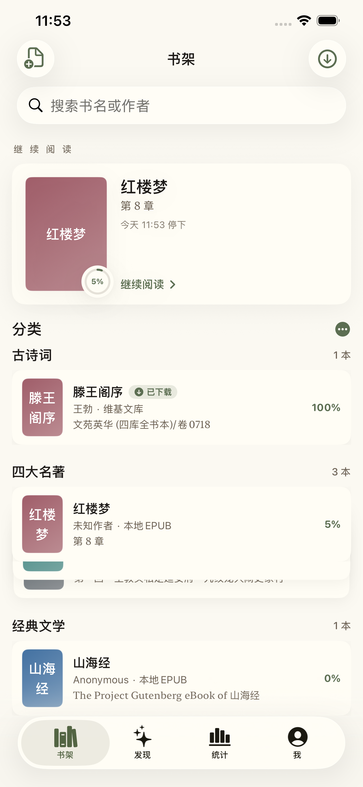
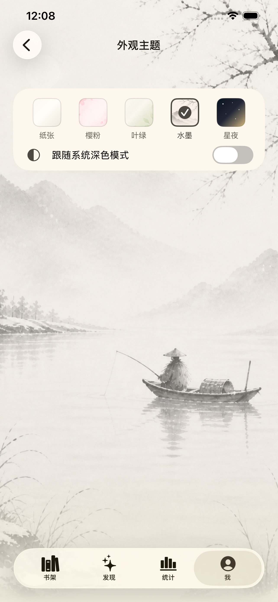
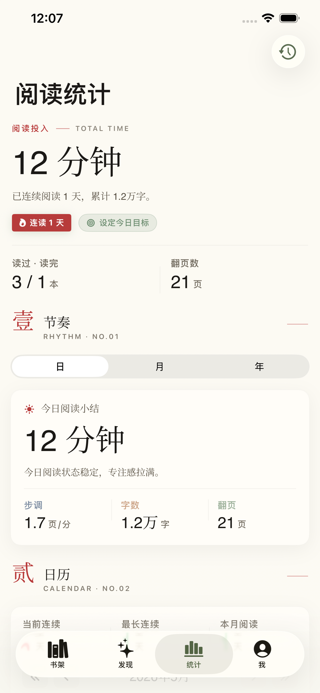

灵阅书屋
一个专为中文阅读打造的精致 iOS 阅读器
关于
灵阅书屋让你像翻一本纸书那样在 iPhone 与 iPad 上阅读中文长篇。本地 TXT、EPUB、HTML 一键导入;也可以把常去的文学网站保存进 app,在内置浏览器中随时打开,识别到书籍页时一键加入书架。
所有数据本地存储。没有账号、没有云端、没有第三方分析。
截图



主要功能
- 沉浸式阅读 五种页面底色、四款正文字体、三种翻页动画;繁简切换、自动滚读、双栏阅读
- 钱包式书架 分类堆叠展示,跨分类按书名或作者搜索全部书籍
- 添加图书 本地文件导入,或保存常去的网站、识别书籍页后一键入库
- 阅读统计 每日阅读时长、连续天数、日历热力图,以及可分享的章节完成卡片
- 五套全局主题 纸张、樱粉、叶绿、水墨、星夜 — 主题作用于所有顶层页面与内置浏览器
联系与支持
有问题、建议、或想报告 Bug,欢迎在 GitHub 上提交 issue:
隐私
灵阅书屋不收集任何个人数据。你的书籍、阅读进度、统计、偏好全部储存在设备本地;app 不连接任何统计或追踪服务,不提供账号系统或跨设备同步。
完整隐私政策见 隐私政策。